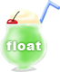

下層ページの構成とは
下層ページの大見出し
下層ページの大見出しは、mainの見出しとなる。headerのh1とmainのh1が存在することになる。
FlexBoxレイアウトの基本
FlexBoxの左エリア
幅サイズは250px
FlexBoxの右側に配置するエリアで、幅サイズは650pxです。
画像の横にテキストを回り込ませ、複数行で表示させるために、img要素にfloatを設定します。
floatプロパティの値をleftにすると、画像が左に配置され、テキストが右に配置されます。rightにすると、画像が右に、テキストが左に配置されます。floatを解除したい要素には、clearプロパティでbothを設定します。
下層ページに使われる要素
- 大見出し（h1）を含むメインコンテンツを囲むarticleタグ
- 大見出し（h1）以外の見出しとその内容をグループ化するsectionタグ
- 現在のページの階層を明示するパンくずリストは、番号付きリスト（olタグ）
- バナーや注意書きなどの補足情報は、asideタグ
見出しグループ
Heading Group
見出しグループは見出しとサブタイトルｐでグループ化する
アコーディオン
アコーディオンのラベル
ラベルをクリックすると、summary以外のタグが表示される。
表組み
| A列 | B列 | C列 |
|---|---|---|
| 1-A | 1-B | 1-C |
| 2-A | 2-B | 2-C |
| セルの数 | 8 | |
transitionの基礎
transitionのオプション
transtionの応用
-
TAB1のコンテンツ
-
TAB2のコンテンツ
-
TAB3のコンテンツ
@keyframes
表示時のフェードイン
点滅表示